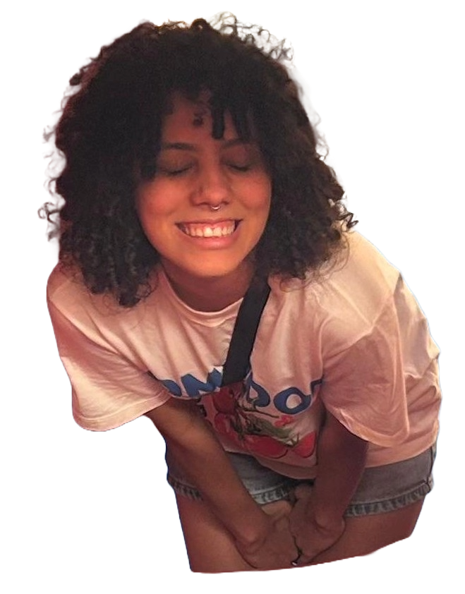
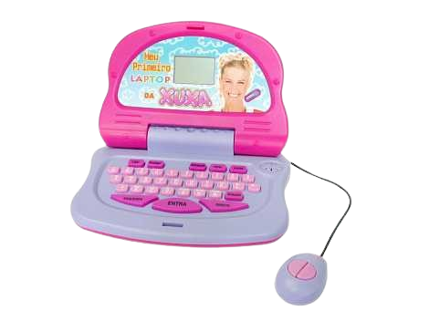
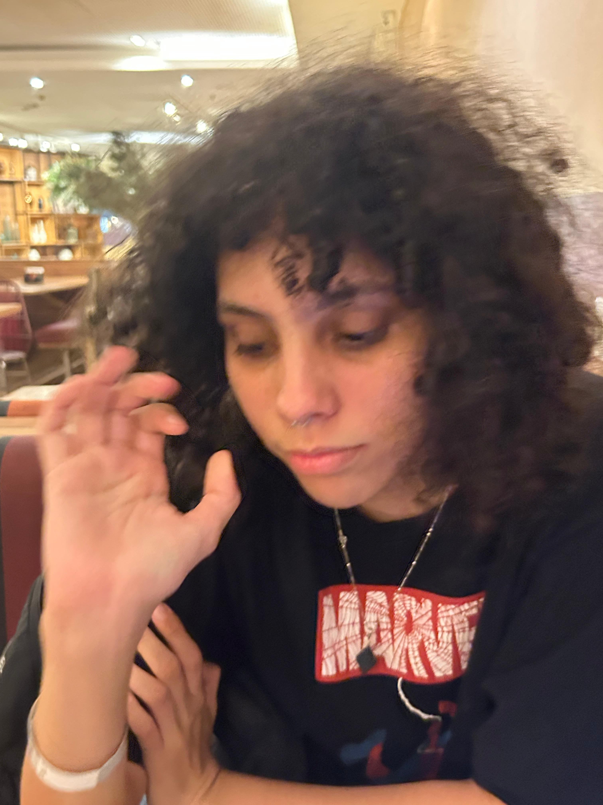
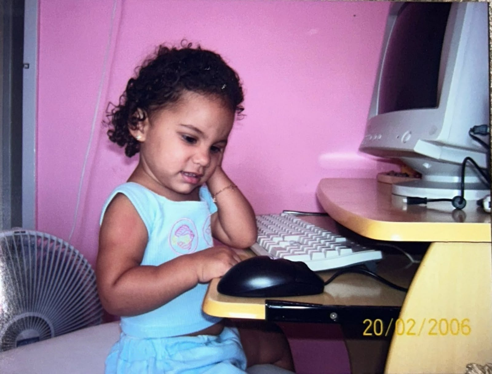

SOFIA
.CAROLINA
<dev em formação>
sofia_carolina diz:
oi! prazer, sofia :)
desde muito nova eu já era grudada no computador. passava horas fuçando nos programas, tentando zerar joguinhos em flash e super curiosa pra entender como as coisas funcionavam por trás da tela brilhante.
o tempo passou e o que era só curiosidade virou a minha escolha de vida: fui estudar Ciência da
Computação!
hoje eu tô aqui, construindo meu caminho como dev. adoro aprender coisas novas, testar visuais
nostálgicos (como esse site!) e transformar minhas ideias malucas em linhas de código que
funcionam de verdade.


